الفصل الأول: المتسعات
فيزياء السادس العلمي — اضغط على الأشكال لتدويرها، واكشف الأجوبة بالضغط، وجرّب المحاكيات.
محتويات الفصل الأول
- 1-1 المتسعة
- 2-1 المتسعة ذات الصفيحتين المتوازيتين
- 3-1 السعة
- 4-1 العازل الكهربائي
- 5-1 العوامل المؤثرة في سعة المتسعة ذات الصفيحتين المتوازيتين
- 6-1 ربط المتسعات (توازي – توالي)
- 7-1 الطاقة المختزنة في المجال الكهربائي للمتسعة
- 8-1 بعض أنواع المتسعات
- 9-1 دائرة تيار مستمر تتألف من مقاومة ومتسعة (RC-circuit)
- 10-1 بعض التطبيقات العملية للمتسعة
- ★ صفحة الواقع المعزز: المتسعة ذات الصفيحتين المتوازيتين
- ★ خلاصة الفصل + جدول القوانين
- ★ تعاريف الفصل كاملة + تعاليل الفصل كاملة
- ★ ماذا يحدث؟ علام يعتمد؟ قارن، ما الفائدة؟
- ★ حلول أسئلة الكتاب ومسائله كاملة
- ★ الأسئلة الوزارية مع الحل
- ★ بنك أسئلة إضافية بنمط وزاري مع الأجوبة
- في الزاوية السفلية لكل صفحة رمز QR صغير: امسحه يفتح لك أشكال تلك الصفحة مجسّمة، تدوّرها 360° بإصبعك وتشوف أسماء الأجزاء.
- رمز صفحة الواقع المعزز يشغّل الكاميرا: وجّهها على الصفحة المطبوعة ملوّنة فتطلع المتسعة من الورقة.
- اضغط «افصل المجسم» لتحمل المتسعة بيدك وتشوفها من كل الجهات.
1-1 المتسعة Capacitor
الموصل الكروي المنفرد المعزول يستطيع أن يخزن كمية محددة من الشحنة الكهربائية فقط. إذا استمررنا بإضافة الشحنة (Q) إليه يزداد جهده (V) على بعد معين (r) من مركزه وفق العلاقة:
إذ إن ε0 سماحية الفراغ ومقدارها ε0 = 8.85 × 10−12 C²/N·m².
ازدياد الجهد يعني ازدياد فرق الجهد بين الموصل والأجسام المحيطة (الهواء مثلاً)، فيزداد المجال الكهربائي حوله حتى يصل حداً يحصل عنده تفريغ كهربائي خلال الهواء؛ لذلك نادراً ما يُستعمل الموصل المنفرد لخزن الشحنات.
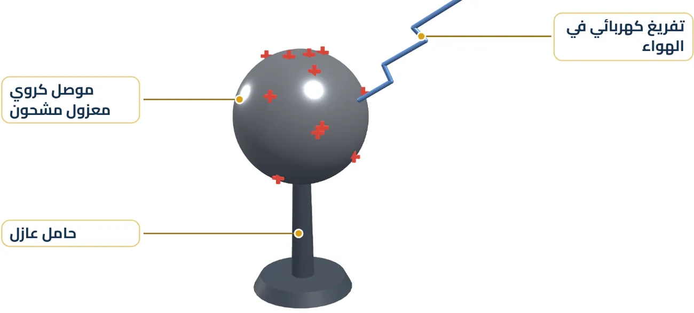
الحل: نظام يتألف من موصلين معزولين (بأي شكلين) يفصل بينهما الفراغ أو الهواء أو مادة عازلة كهربائياً، فيختزن شحنة موجبة على أحدهما وشحنة سالبة على الآخر، ويسمى هذا النظام المتسعة.
للمتسعات أشكال هندسية مختلفة، منها: ذات الصفيحتين المتوازيتين، ذات الأسطوانتين المتمركزتين، ذات الكرتين المتمركزتين، وتُصنع بأحجام وأنواع مختلفة تبعاً لتطبيقاتها. في هذا الفصل ندرس المتسعة ذات الصفيحتين المتوازيتين.
2-1 المتسعة ذات الصفيحتين المتوازيتين The parallel-plate Capacitor
أبسط أشكال المتسعات وأكثرها استعمالاً: صفيحتان موصلتان مستويتان متماثلتان معزولتان ومتوازيتان، مساحة كل منهما (A) والبعد بينهما (d).
- تكون الصفيحتان ابتداءً غير مشحونتين. لشحنهما نربط إحداهما بالقطب الموجب للبطارية فتظهر عليها شحنة (+Q)، والأخرى بالقطب السالب فتظهر عليها شحنة (−Q) مساوية لها مقداراً.
- الشحنتان تقعان على السطحين المتقابلين (الداخليين) للصفيحتين بسبب قوى التجاذب بينهما.
- صافي الشحنة على صفيحتي المتسعة يساوي صفراً.
- المجال بين الصفيحتين منتظم إذا كان البعد (d) صغيراً جداً مقارنة بأبعاد الصفيحة، فنُهمل عدم انتظام خطوط المجال عند الحافات.
- جميع نقاط الصفيحة الواحدة بجهد متساوٍ لأنها موصلة، ويتولد فرق جهد (ΔV) بين الصفيحة ذات الجهد الأعلى (الموجبة) والصفيحة ذات الجهد الأوطأ (السالبة).
- رمز المتسعة في الدوائر: —| |— وينطبق على جميع أنواع المتسعات.
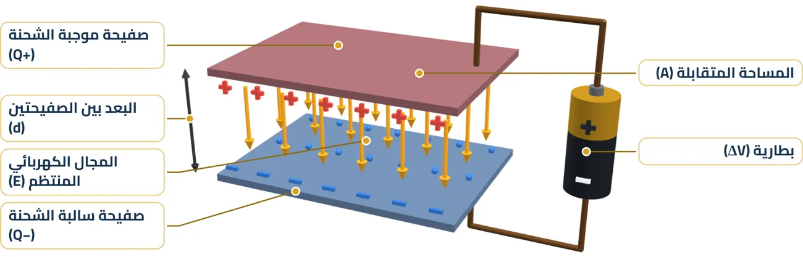
3-1 السعة Capacitance
وُجد عملياً أن فرق الجهد (ΔV) بين صفيحتي المتسعة المشحونة يتناسب طردياً مع مقدار الشحنة (Q) على أي من صفيحتيها، فالنسبة بينهما مقدار ثابت يسمى سعة المتسعة (C):
وحدة السعة في النظام الدولي Coulomb/Volt وتسمى الفاراد (Farad):
الفاراد وحدة كبيرة جداً، لذلك نستعمل أجزاءه:
| الوحدة | تساوي |
|---|---|
| 1 μF (مايكروفاراد) | 10−6 F |
| 1 nF (نانوفاراد) | 10−9 F |
| 1 pF (بيكوفاراد) | 10−12 F |
4-1 العازل الكهربائي Dielectric
توجد مواد مثل الورق المشمع واللدائن (البلاستك) والزجاج غير موصلة للكهربائية في الظروف الاعتيادية، وتعمل على تقليل مقدار المجال الكهربائي الموضوعة فيه؛ لذا تسمى المواد العازلة كهربائياً (Dielectric materials).
النوع الأول: العوازل القطبية Polar dielectrics (مثل الماء)
- جزيئاتها تمتلك عزوماً كهربائية ثنائية القطب دائمية؛ التباعد بين مركزي شحنتيها الموجبة والسالبة ثابت (تسمى الجزيئة دايبول).
- بغياب المجال الخارجي تكون اتجاهاتها عشوائية.
- عند إدخالها بين صفيحتي متسعة مشحونة يؤثر المجال فيها ويجعل معظمها يصطف بموازاة المجال، فيتولد داخل العازل مجال معاكس للمجال الخارجي وأقل منه مقداراً، فيقل المجال المحصل.
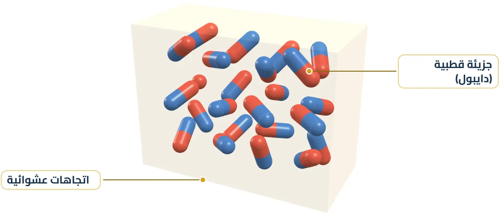
النوع الثاني: العوازل غير القطبية Non polar dielectrics (مثل الزجاج والبولي أثيلين)
- التباعد بين مركزي شحنتيها الموجبة والسالبة غير ثابت (منطبقان بغياب المجال).
- المجال الخارجي يزيح مركزي الشحنتين في الجزيئة الواحدة إزاحة ضئيلة، فتكتسب بصورة مؤقتة عزوماً ثنائية القطب بطريقة الحث الكهربائي، وتتحول الجزيئة إلى دايبول يصطف مع المجال.
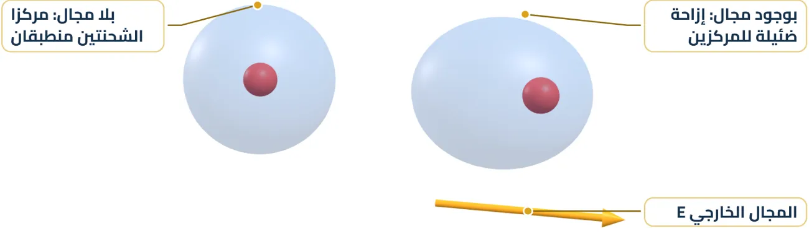
استقطاب العازل
نتيجة اصطفاف الدايبولات تظهر شحنة سطحية موجبة على وجه العازل المقابل للصفيحة السالبة، وشحنة سطحية سالبة على وجه العازل المقابل للصفيحة الموجبة (ويبقى العازل متعادلاً كهربائياً)، فيصبح العازل مستقطباً. الشحنتان السطحيتان تولدان داخل العازل مجالاً (Ed) يعاكس المجال المؤثر (E) فيضعفه:
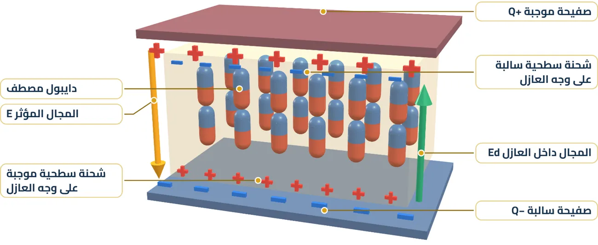
وبما أن E = ΔV / d فإن فرق الجهد يقل بالنسبة نفسها، وتزداد السعة:
| وجه المقارنة | العازل القطبي | العازل غير القطبي |
|---|---|---|
| العزم ثنائي القطب | دائمي | مؤقت (يُكتسب بالحث بوجود المجال) |
| التباعد بين مركزي الشحنتين | ثابت | غير ثابت |
| بغياب المجال | دايبولات باتجاهات عشوائية | لا دايبولات (المركزان منطبقان) |
| أمثلة | الماء | الزجاج، البولي أثيلين |
نشاط: تجربة فراداي Faraday's experiment
الأدوات: متسعة ذات صفيحتين متوازيتين (الهواء عازل) غير مشحونة، بطارية، فولطميتر، أسلاك، لوح عازل ثابت عزله (k).
- نشحن المتسعة بربط صفيحتيها بقطبي البطارية، ثم نفصل البطارية.
- نربط الفولطميتر بين الصفيحتين، فينحرف مؤشره دلالة على وجود فرق جهد (ΔV).
- ندخل اللوح العازل بين الصفيحتين، فنلاحظ نقصان قراءة الفولطميتر.
الاستنتاج: إدخال العازل بين صفيحتي متسعة مشحونة ومفصولة ينقص فرق الجهد بنسبة ثابت العزل (ΔVk = ΔV/k)، ولأن الشحنة ثابتة تزداد السعة Ck = kC.
أقصى فرق جهد وقوة العزل الكهربائي
يُكتب على كل متسعة أقصى فرق جهد تعمل عنده. إذا زدنا فرق الجهد فوق هذا الحد يزداد المجال بين الصفيحتين كثيراً فيحصل انهيار كهربائي للعازل وتعبر شرارة خلاله، فتتفرغ المتسعة من جميع شحنتها وتتلف.
| المادة | ثابت العزل k | قوة العزل (V/m) |
|---|---|---|
| الفراغ vacuum | 1.00000 | — |
| الهواء الجاف (1 atm) | 1.00059 | 3 × 106 |
| المطاط rubber | 6.7 | 12 × 106 |
| النايلون nylon | 3.4 | 14 × 106 |
| الورق paper | 3.7 | 16 × 106 |
| لدائن البوليستيرين | 2.56 | 24 × 106 |
| زجاج البايركس Pyrex | 5.6 | 14 × 106 |
| زيت السيليكون | 2.5 | 15 × 106 |
| التفلون Teflon | 2.1 | 60 × 106 |
| الماء النقي (20°C) | 80 | — |
| السترونيوم Strontium | 300 | 8 × 106 |
| المايكا Mica | 3 – 6 | (150 – 220) × 106 |
| الكمية | المتسعة مفصولة عن البطارية | المتسعة متصلة بالبطارية |
|---|---|---|
| الشحنة Q | ثابتة | تزداد k مرة (Qk = kQ) |
| فرق الجهد ΔV | يقل k مرة (ΔV/k) | ثابت (= فرق جهد البطارية) |
| السعة C | تزداد k مرة | تزداد k مرة |
| المجال E | يقل k مرة | ثابت (ΔV و d ثابتان) |
| الطاقة PE | تقل k مرة (½Q²/C) | تزداد k مرة (½CΔV²) |
5-1 العوامل المؤثرة في سعة المتسعة ذات الصفيحتين المتوازيتين
- المساحة السطحية المتقابلة (A) لكل من الصفيحتين: السعة تتناسب معها طردياً (C ∝ A).
- البعد بين الصفيحتين (d): السعة تتناسب معه عكسياً (C ∝ 1/d).
- نوع الوسط العازل بين الصفيحتين.
🧪 مختبر المتسعة
غيّر المساحة والبعد والعازل وفرق الجهد، وشوف السعة والشحنة والمجال والطاقة تتغير مباشرة. جرّب «افصل البطارية» ثم أدخل عازلاً!
تأثير المساحة: متسعة مشحونة ومفصولة مربوطة بفولطميتر؛ عند إزاحة إحدى الصفيحتين جانباً حتى تصبح المساحة المتقابلة A/2 (مع بقاء Q ثابتة) تزداد قراءة الفولطميتر إلى 2ΔV، فتقل السعة إلى النصف.
تأثير البعد: عند تقريب الصفيحتين إلى البعد d/2 (مع بقاء Q ثابتة) تقل قراءة الفولطميتر إلى ΔV/2، فتتضاعف السعة.
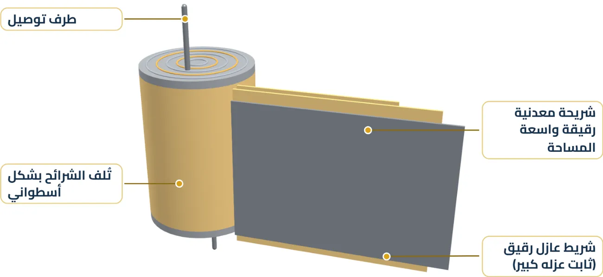
متسعة ذات صفيحتين متوازيتين سعتها (10pF) شُحنت ببطارية فرق جهدها (12V)، ثم فُصلت وأُدخل بين صفيحتيها لوح عازل ثابت عزله (6) يملأ الحيز. ما مقدار: 1- الشحنة على أي من الصفيحتين. 2- السعة بوجود العازل. 3- فرق الجهد بعد إدخال العازل.
1- Q = C ΔV = 10 × 10−12 × 12 = 120 × 10−12 C
2- Ck = k C = 6 × 10 = 60 pF
3- المتسعة مفصولة فالشحنة ثابتة Qk = Q = 120 pC:
ΔVk = Qk/Ck = 120/60 = 2 V أو ΔVk = ΔV/k = 12/6 = 2 V
متسعة ذات صفيحتين متوازيتين، البعد بينهما (0.5cm) وكل صفيحة مربعة طول ضلعها (10cm) ويفصل بينهما الفراغ (ε0 = 8.85 × 10−12 C²/N·m²). ما مقدار: 1- سعة المتسعة. 2- الشحنة على أي من الصفيحتين عند تسليط فرق جهد (10V).
A = (0.1)² = 1 × 10−2 m² ، d = 0.5 cm = 5 × 10−3 m
1- C = ε0A/d = 8.85 × 10−12 × 10−2 / 5 × 10−3 = 1.77 × 10−11 F = 17.7 pF
2- Q = C ΔV = 17.7 × 10−12 × 10 = 177 × 10−12 C
6-1 ربط المتسعات (توازي – توالي)
توجد طريقتان لربط المتسعات: التوازي لزيادة السعة المكافئة، والتوالي لتقليل السعة المكافئة حتى نستطيع وضع فرق جهد أكبر على طرفي المجموعة قد لا تتحمله أي متسعة لو رُبطت منفردة.
أولاً: الربط على التوازي
- فرق الجهد متساوٍ: ΔV1 = ΔV2 = ΔVbattery = ΔV
- الشحنة الكلية = المجموع الجبري للشحنات: Qtotal = Q1 + Q2
- الاشتقاق: CeqΔV = C1ΔV + C2ΔV وبالقسمة على ΔV:
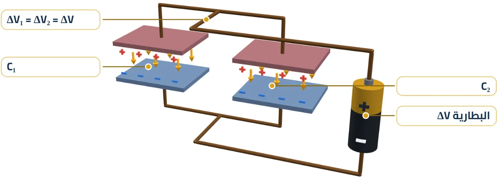
ثانياً: الربط على التوالي
- الشحنة متساوية: Qtotal = Q1 = Q2؛ لأن الصفيحتين الوسطيتين موصولتان بسلك فتُعدّان موصلاً واحداً تظهر عليه شحنتان متساويتان مقداراً ومختلفتان نوعاً بالحث.
- فرق الجهد الكلي = المجموع: ΔVtotal = ΔV1 + ΔV2
- الاشتقاق: Q/Ceq = Q/C1 + Q/C2 وبالقسمة على Q:
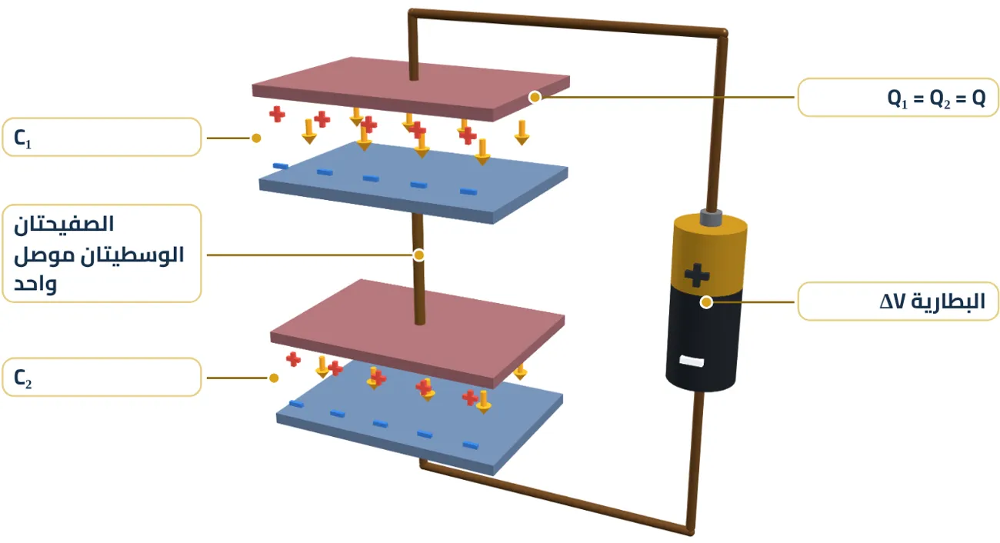
| وجه المقارنة | التوازي | التوالي |
|---|---|---|
| فرق الجهد | متساوٍ لكل المتسعات | يتوزع: ΔVtotal = ΣΔV |
| الشحنة | تتوزع: Qtotal = ΣQ | متساوية لكل المتسعات |
| السعة المكافئة | Ceq = ΣC (أكبر من أكبرها) | 1/Ceq = Σ1/C (أصغر من أصغرها) |
| الغرض | زيادة السعة | تحمّل فرق جهد أكبر |
| التفسير | زيادة المساحة المتقابلة | زيادة البعد بين الصفيحتين |
| المتسعة الأكبر سعة | تختزن شحنة أكبر | عليها فرق جهد أقل |
🔗 حاسبة التوالي والتوازي
اكتب سعات حتى أربع متسعات واختر طريقة الربط وفرق الجهد.
أربع متسعات سعاتها (4μF , 8μF , 12μF , 6μF) مربوطة على التوازي، رُبطت المجموعة بين قطبي بطارية (12V). احسب: 1- السعة المكافئة. 2- الشحنة على كل متسعة. 3- الشحنة الكلية.
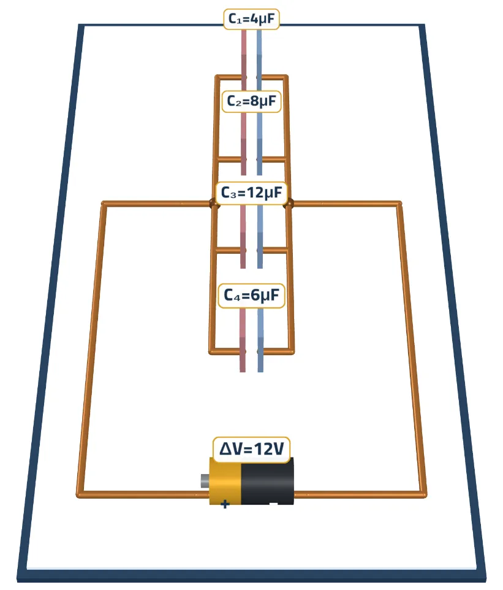
1- Ceq = 4 + 8 + 12 + 6 = 30 μF
2- التوازي ⟸ ΔV1 = ΔV2 = ΔV3 = ΔV4 = 12 V
Q1 = 4 × 12 = 48 μC ، Q2 = 8 × 12 = 96 μC ، Q3 = 12 × 12 = 144 μC ، Q4 = 6 × 12 = 72 μC
3- Qtotal = Ceq ΔV = 30 × 12 = 360 μC (= 48 + 96 + 144 + 72)
ثلاث متسعات سعاتها (6μF , 9μF , 18μF) مربوطة على التوالي، شُحنت المجموعة بشحنة كلية (300μC). احسب: 1- السعة المكافئة. 2- الشحنة على كل متسعة. 3- فرق الجهد الكلي. 4- فرق الجهد على كل متسعة.
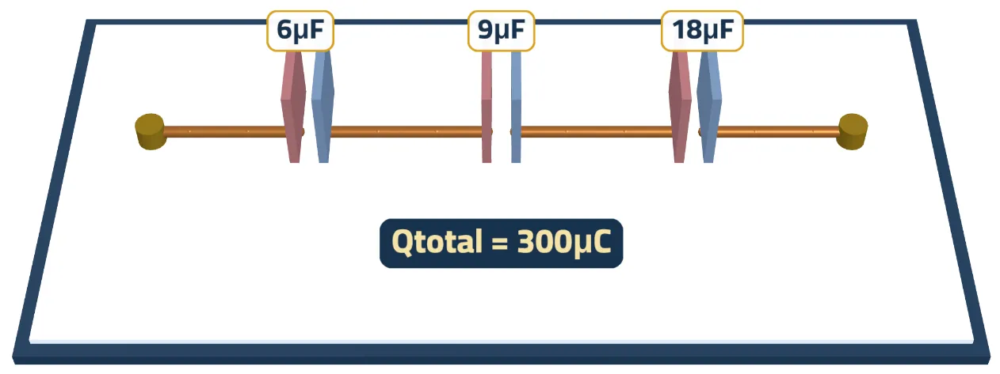
1- 1/Ceq = 1/6 + 1/9 + 1/18 = (3 + 2 + 1)/18 = 1/3 ⟹ Ceq = 3 μF
2- التوالي ⟸ Q1 = Q2 = Q3 = Qtotal = 300 μC
3- ΔVtotal = Qtotal/Ceq = 300/3 = 100 V
4- ΔV1 = 300/6 = 50 V ، ΔV2 = 300/9 = 100/3 V ، ΔV3 = 300/18 = 50/3 V (المجموع = 100 V ✓)
من المعلومات في الشكل: C1 = 20μF و C2 = 30μF على التوالي، ومجموعتهما على التوازي مع C3 = 18μF، والبطارية 12V. احسب: 1- السعة المكافئة. 2- الشحنة الكلية. 3- الشحنة على كل متسعة.
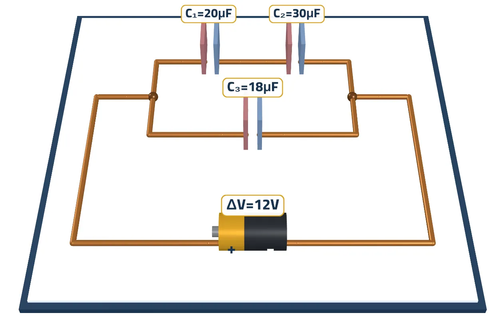
1- 1/C' = 1/20 + 1/30 = 5/60 = 1/12 ⟹ C' = 12 μF ، ثم Ceq = C' + C3 = 12 + 18 = 30 μF
2- Qtotal = 30 × 12 = 360 μC
3- فرع التوالي وC3 على التوازي فكلاهما على 12V:
Q' = 12 × 12 = 144 μC = Q1 = Q2 ، Q3 = 18 × 12 = 216 μC
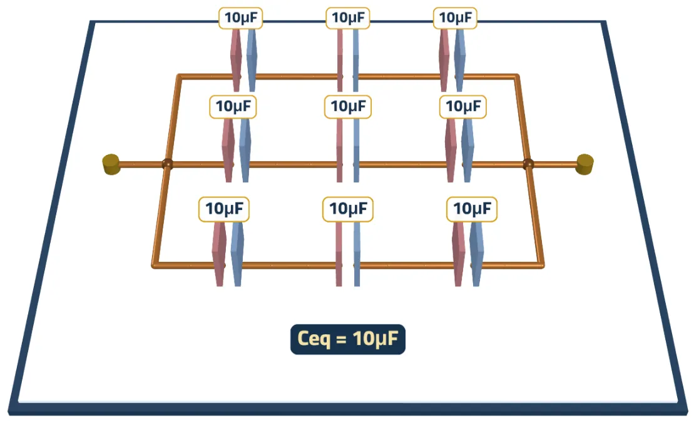
7-1 الطاقة المختزنة في المجال الكهربائي للمتسعة
نقل الشحنات بين موقعين بينهما فرق جهد يحتاج إنجاز شغل، يُختزن بشكل طاقة كامنة كهربائية (PE) في المجال الكهربائي بين الصفيحتين. المتسعة غير المشحونة: Q = 0 و ΔV = 0، وبالاستمرار بالشحن يزداد ΔV.
الطاقة = مساحة المثلث تحت المخطط البياني (Q – ΔV) = ½ × القاعدة (ΔV) × الارتفاع (Q):
⚡ الطاقة = مساحة المثلث
حرّك فرق الجهد وشوف المساحة تحت مخطط (Q – ΔV) تكبر.
ما مقدار الطاقة المختزنة في المجال الكهربائي لمتسعة سعتها (2μF) شُحنت لفرق جهد (5000V)؟ وما القدرة عند تفريغها بزمن (10μs)؟
PE = ½ C (ΔV)² = ½ × 2 × 10−6 × (5000)² = 25 J
P = PE / t = 25 / 10 × 10−6 = 2.5 × 106 Watt
متسعتان (C1 = 3μF , C2 = 6μF) على التوالي، ومجموعتهما بين قطبي بطارية (24V) والهواء عازل. أُدخل بين صفيحتي كل منهما لوح عازل ثابت عزله (2) يملأ الحيز والمجموعة ما زالت متصلة بالبطارية. ما فرق الجهد والطاقة لكل متسعة: 1- قبل إدخال العازل. 2- بعد إدخاله.
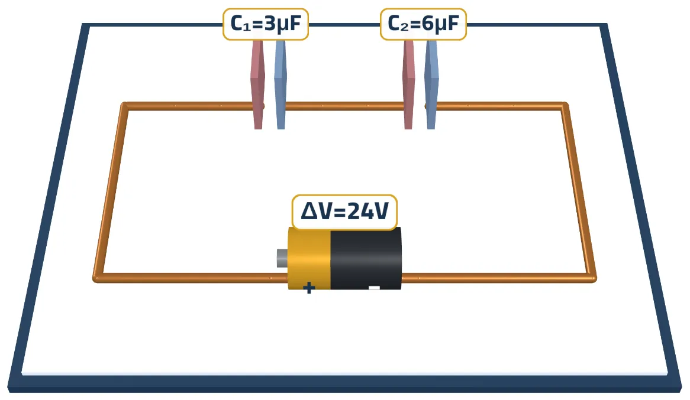
1- قبل العازل: 1/Ceq = 1/3 + 1/6 = 1/2 ⟹ Ceq = 2 μF ، Q = 2 × 24 = 48 μC = Q1 = Q2
ΔV1 = 48/3 = 16 V ، ΔV2 = 48/6 = 8 V
PE1 = ½ × 3 × 10−6 × (16)² = 384 × 10−6 J ، PE2 = ½ × 6 × 10−6 × (8)² = 192 × 10−6 J
2- بعد العازل: C1k = 2 × 3 = 6 μF ، C2k = 2 × 6 = 12 μF ، 1/Ceq = 1/6 + 1/12 = 1/4 ⟹ Ceq = 4 μF
البطارية متصلة فـ ΔV الكلي ثابت (24V): Q = 4 × 24 = 96 μC = Q1k = Q2k
ΔV1k = 96/6 = 16 V ، ΔV2k = 96/12 = 8 V
PE1k = ½ × 6 × 10−6 × (16)² = 768 × 10−6 J ، PE2k = ½ × 12 × 10−6 × (8)² = 384 × 10−6 J
8-1 بعض أنواع المتسعات
تتوافر المتسعات صناعياً بأنواع وأحجام ومواد مختلفة، منها متغير السعة ومنها ثابت السعة، ومن أمثلتها:
a- المتسعة ذات الورق المشمع: تُستعمل في عدد من الأجهزة الكهربائية والإلكترونية، تمتاز بصغر حجمها وكبر مساحة صفائحها (شرائح ملفوفة كما في الشكل السابق).
b- المتسعة متغيرة السعة ذات الصفائح الدوّارة: مجموعتان من الصفائح بشكل أنصاف أقراص، إحداهما ثابتة والأخرى تدور حول محور ثابت. تُربط المجموعتان بين قطبي البطارية فتكون مكافئة لمجموعة متسعات مربوطة على التوازي. تتغير سعتها أثناء الدوران لتغير المساحة السطحية المتقابلة، والهواء عازل بين الصفائح. تُستعمل في دائرة التنغيم في اللاسلكي والمذياع سابقاً.
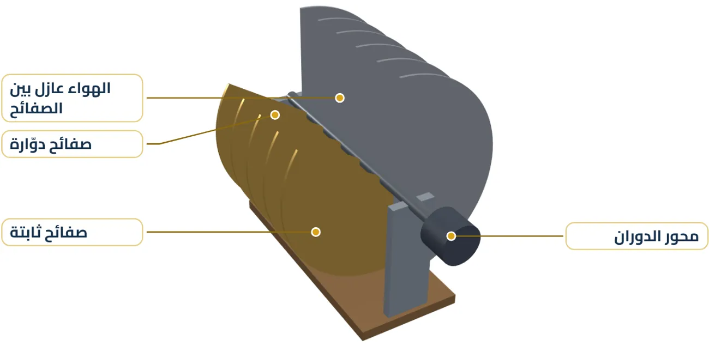
c- المتسعة الإلكتروليتية: صفيحتان إحداهما من الألمنيوم والأخرى عجينة إلكتروليتية، وتتولد المادة العازلة نتيجة التفاعل الكيميائي بين الألمنيوم والإلكتروليت، وتُلف الصفائح بشكل أسطواني. تمتاز بأنها تتحمل فرق جهد عالٍ، وتوضع علامة على طرفيها للدلالة على قطبيتها لربطها في الدائرة بقطبية صحيحة.
| نوع المتسعة | مدى سعتها | مدى فرق الجهد الذي تعمل فيه |
|---|---|---|
| المايكا mica | 1pF – 10nF | 100V – 600V |
| السيراميك ceramic | 10pF – 1μF | 30V – 50kV |
| بوليستيرين polystyrene | 10pF – 2.7μF | 100V – 600V |
| بوليكاربونيت polycarbonate | 100pF – 30μF | 50V – 800V |
| تانتالوم tantalum | 100nF – 500μF | 6V – 100V |
| الإلكتروليت (ألمنيوم) electrolyte | 100nF – 2F | 3V – 600V |
الجدول للاطلاع.
9-1 دائرة تيار مستمر تتألف من مقاومة ومتسعة (RC-circuit)
الدوائر التي درستها سابقاً (مصدر + مقاومة) تيارها ثابت لا يتغير مع الزمن. أما إذا احتوت الدائرة متسعة فضلاً عن البطارية والمقاومة فتسمى دائرة المتسعة والمقاومة (RC-circuit) ويكون تيارها متغيراً مع الزمن. أبسطها دوائر شحن المتسعة وتفريغها.
الأدوات: بطارية، كلفانوميتر (G) صفره في وسط التدريجة، متسعة (C) صفيحتاها (A , B)، مفتاح مزدوج (K)، مقاومة (R)، مصباحان متماثلان (L1 , L2)، أسلاك.
🔌 دائرة الشحن والتفريغ
حوّل المفتاح K بين (1) و(2) وراقب الكلفانوميتر والمصباحين ومنحني التيار.
أولاً: شحن المتسعة (المفتاح على الموقع 1)
- ينحرف مؤشر الكلفانوميتر لحظياً إلى أحد جانبي الصفر ثم يعود بسرعة إلى الصفر، ويتوهج المصباح L1 بضوء ساطع لبرهة ثم ينطفئ.
- بعد اكتمال الشحن يتساوى جهد كل صفيحة مع قطب البطارية المتصل بها، فيصبح فرق جهد المتسعة = فرق جهد البطارية، ولا يتوافر فرق جهد على طرفي المقاومة فيصبح التيار صفراً.
- الإلكترونات تتراكم على الصفيحة B المربوطة بالقطب السالب فتُشحن بـ (−Q)، والصفيحة A تُشحن بـ (+Q) بالمقدار نفسه بالحث.
- تيار الشحن يبدأ بمقدار كبير لحظة غلق الدائرة I = ΔVbattery / R ثم يتناقص إلى الصفر.
ثانياً: تفريغ المتسعة (المفتاح على الموقع 2)
- تُربط صفيحتا المتسعة ببعضهما بسلك موصل فتتعادل شحنتاهما.
- ينحرف مؤشر الكلفانوميتر لحظياً إلى الجانب الآخر من الصفر ثم يعود بسرعة، ويتوهج المصباح L2.
- تيار التفريغ يبدأ بمقدار كبير ويهبط إلى الصفر بسرعة عندما ΔVC = 0.
دائرة متوالية فيها مصباح مقاومته (r = 10Ω) ومقاومة (R = 20Ω) وبطارية (ΔV = 6V)، ومتسعة سعتها (5μF). ما الشحنة والطاقة في المتسعة لو رُبطت: 1- على التوازي مع المصباح. 2- على التوالي مع المصباح والمقاومة والبطارية (بعد تفريغها).
1- I = ΔV/(r + R) = 6/(10 + 20) = 0.2 A ، ΔVlamp = I r = 0.2 × 10 = 2 V
المتسعة توازي المصباح ⟸ ΔVC = 2 V ، Q = 5 × 10−6 × 2 = 10 μC ، PE = ½ × 5 × 10−6 × (2)² = 10 × 10−6 J
2- المتسعة على التوالي تقطع التيار بعد الشحن (I = 0) فتكون الدائرة مفتوحة و ΔVC = 6 V:
Q = 5 × 10−6 × 6 = 30 μC ، PE = ½ × 5 × 10−6 × (6)² = 90 × 10−6 J
10-1 بعض التطبيقات العملية للمتسعة
- المصباح الومضي في آلة التصوير: المتسعة المشحونة تجهز المصباح بطاقة تكفي لتوهجه بصورة مفاجئة بضوء ساطع أثناء تفريغها.
- اللاقطة الصوتية (microphone): إحدى صفيحتيها صلبة ثابتة والأخرى مرنة حرة الحركة، والصفيحتان عند فرق جهد ثابت. الموجات الصوتية تهز الصفيحة المرنة فيتغير البعد بين الصفيحتين فتتغير السعة بتردد الموجات الصوتية نفسه؛ أي تحويل الذبذبات الميكانيكية إلى ذبذبات كهربائية.
- جهاز تحفيز وتنظيم حركة عضلات القلب (The defibrillator): ينقل مقادير محددة من الطاقة إلى مريض اضطراب حركة عضلات القلب بصدمة كهربائية؛ المتسعة المشحونة في الجهاز تفرغ طاقتها التي تتراوح بين (10J – 360J) في جسم المريض بمدة زمنية قصيرة جداً.
- لوحة مفاتيح الحاسوب: تحت كل حرف متسعة؛ المفتاح مثبت بصفيحة متحركة والأخرى ثابتة في القاعدة. عند الضغط يقل البعد بين الصفيحتين فتزداد السعة، فتتعرف الدوائر الإلكترونية على المفتاح المضغوط.
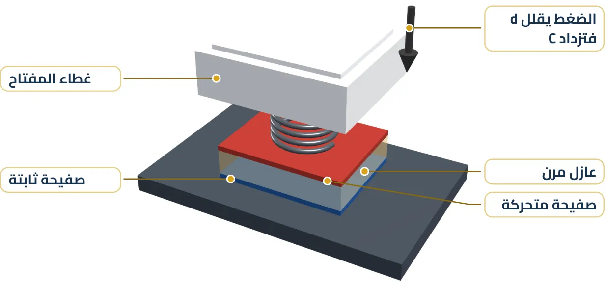
المتسعة ذات الصفيحتين المتوازيتين
امسح الرمز ووجّه الكاميرا على هذه الصفحة: تطلع المتسعة من الورقة، دوّرها 360° وافصلها بيدك.
★ خلاصة الفصل الأول
| الموضوع | القانون / النتيجة | ملاحظة |
|---|---|---|
| ثابت كولوم | k = 1/4πε0 = 9×109 N·m²/C² | ε0 = 8.85×10−12 C²/N·m² |
| السعة | C = Q / ΔV | F = C/V ، μF = 10−6 ، nF = 10−9 ، pF = 10−12 |
| سعة متسعة الصفيحتين | C = ε0A/d ، Ck = kε0A/d | طردياً مع A وعكسياً مع d |
| العازل | Ck = kC ، Ek = E/k ، ΔVk = ΔV/k | Ek = E − Ed |
| المجال المنتظم | E = ΔV / d | وحدته V/m |
| التوازي | Ceq = C1 + C2 + … | ΔV متساوٍ ، Qtotal = ΣQ |
| التوالي | 1/Ceq = 1/C1 + 1/C2 + … | Q متساوية ، ΔVtotal = ΣΔV |
| الطاقة | PE = ½QΔV = ½C(ΔV)² = ½Q²/C | مساحة مثلث (Q–ΔV) |
| القدرة | P = PE / t | Watt |
| تيار الشحن الأعظم | Imax = ΔV / R | المتسعة المشحونة = مفتاح مفتوح |
★ تعاريف الفصل الأول كاملة
★ تعاليل الفصل الأول كاملة
لأن زيادة شحنته تزيد جهده والمجال حوله حتى يحصل تفريغ كهربائي خلال الهواء.
بسبب قوى التجاذب بين الشحنتين المختلفتين نوعاً.
لأن الصفيحتين تحملان شحنتين متساويتين مقداراً ومختلفتين نوعاً.
لأن البعد بين الصفيحتين صغير جداً مقارنة بأبعاد الصفيحة فيُهمل عدم انتظام الخطوط عند الحافات.
لأن الشحنة تتناسب طردياً مع فرق الجهد فتبقى النسبة Q/ΔV ثابتة، والسعة تعتمد على المساحة والبعد ونوع العازل فقط.
لأن العازل يستقطب ويولد مجالاً Ed معاكساً للمجال المؤثر فيقل المحصل Ek = E − Ed.
لأن المجال يقل k مرة وفرق الجهد يتناسب طردياً مع المجال (ΔV = E d).
لأن فرق الجهد يقل بثبوت الشحنة (أو تزداد الشحنة بثبوت فرق الجهد) فتزداد النسبة C = Q/ΔV بالعامل k.
لأن الشحنتين السطحيتين على وجهيه متساويتان مقداراً ومختلفتان نوعاً، ولم تُضف إليه شحنة.
لتجنب الانهيار الكهربائي للعازل وعبور الشرارة وتفرّغ المتسعة وتلفها.
لأن المساحة المتقابلة تقل، والسعة تتناسب طردياً مع المساحة المتقابلة.
لأن السعة تتناسب عكسياً مع البعد بين الصفيحتين (C = ε0A/d).
لزيادة المساحة المتقابلة وتقليل البعد واستعمال عازل ثابت عزله كبير، فتزداد السعة مع صغر الحجم.
لتقليل السعة المكافئة حتى نضع على طرفي المجموعة فرق جهد كبيراً قد لا تتحمله أي متسعة لو رُبطت منفردة.
لأن التوازي يزيد المساحة المتقابلة للمتسعة المكافئة.
لأن التوالي يزيد البعد بين صفيحتي المتسعة المكافئة.
لأن الصفيحتين الوسطيتين موصولتان بسلك فتُعدّان موصلاً واحداً تظهر عليه شحنتان متساويتان مقداراً ومختلفتان نوعاً بالحث.
لأن صفائحها متصلة بالنقطتين نفسيهما (طرفي البطارية).
لأن الصفائح الثابتة متصلة ببعضها بطرف والدوّارة بالطرف الآخر، فكل زوج متقابل متسعة بفرق الجهد نفسه.
للدلالة على قطبيتها حتى تُربط في الدائرة بقطبية صحيحة.
لأن تيار الشحن يبدأ كبيراً ثم يتناقص إلى الصفر عندما يتساوى فرق جهد المتسعة مع فرق جهد البطارية.
لأن تيار الشحن لحظي، يبدأ كبيراً وينعدم بعد اكتمال الشحن.
لأن فرق جهدها يساوي فرق جهد البطارية فلا يتوافر فرق جهد على المقاومة والتيار = صفر.
لأن تيار التفريغ معاكس لتيار الشحن في الاتجاه.
لأنها تبقى مشحونة مدة طويلة، وعند لمسها يصبح الجسم موصلاً فتفرغ طاقتها الكبيرة خلاله بزمن قصير.
لقدرتها على تخزين طاقة كبيرة وتفريغها بسرعة كبيرة جداً وبكميات هائلة عند الحاجة.
لأن الصفيحة المرنة تهتز فيتغير البعد بين الصفيحتين فتتغير السعة بتردد الموجات الصوتية نفسه.
★ ماذا يحدث؟ (مع السبب)
| الحالة | Q | C | ΔV | E | PE |
|---|---|---|---|---|---|
| إدخال عازل — المتسعة مفصولة | ثابتة | ×k | ÷k | ÷k | ÷k |
| إدخال عازل — المتسعة متصلة | ×k | ×k | ثابت | ثابت | ×k |
| إبعاد الصفيحتين — مفصولة | ثابتة | تقل | يزداد | ثابت | تزداد |
| إبعاد الصفيحتين — متصلة | تقل | تقل | ثابت | يقل | تقل |
| تقريب الصفيحتين — مفصولة | ثابتة | تزداد | يقل | ثابت | تقل |
| تقليل المساحة المتقابلة — مفصولة | ثابتة | تقل | يزداد | يزداد | تزداد |
| مضاعفة ΔV (C ثابتة) | ×2 | ثابتة | ×2 | ×2 | ×4 |
السبب في كل الحالات: C = kε0A/d ، Q = CΔV ، E = ΔV/d ، PE = ½CΔV² = ½Q²/C. المفصولة Q ثابتة، والمتصلة ΔV ثابت.
★ علام يعتمد؟
| الكمية | تعتمد على |
|---|---|
| سعة متسعة الصفيحتين المتوازيتين | المساحة المتقابلة (طردياً)، البعد بين الصفيحتين (عكسياً)، نوع العازل (k) |
| الطاقة المختزنة في المجال | السعة وفرق الجهد (½CΔV²) — أو الشحنة وفرق الجهد |
| السعة المكافئة لمجموعة | سعات المتسعات وطريقة ربطها |
| مقدار تيار الشحن الأعظم | فرق جهد البطارية والمقاومة (I = ΔV/R) |
| قوة العزل الكهربائي | نوع المادة العازلة |
| المجال بين الصفيحتين | فرق الجهد والبعد (E = ΔV/d) |
★ قارن بين
| وجه المقارنة | تيار الشحن | تيار التفريغ |
|---|---|---|
| موقع المفتاح K | (1) — مع البطارية | (2) — بدون البطارية |
| المقدار لحظة الغلق | كبير (ΔV/R) ثم يتناقص للصفر | كبير ثم يهبط للصفر بسرعة |
| الاتجاه وانحراف G | لجهة (نحو اليمين) | معاكس (نحو اليسار) |
| المصباح المتوهج | L1 | L2 |
| ينتهي عندما | ΔVC = ΔVbattery | ΔVC = 0 |
| وجه المقارنة | الورق المشمع | متغيرة السعة (الدوّارة) | الإلكتروليتية |
|---|---|---|---|
| السعة | ثابتة | متغيرة | ثابتة |
| العازل | ورق مشمع | الهواء | يتولد بتفاعل الألمنيوم والإلكتروليت |
| الميزة | صغر الحجم وكبر مساحة الصفائح | تتغير سعتها بالدوران (مكافئة لتوازي) | تتحمل فرق جهد عالياً، لها قطبية |
| الاستعمال | أجهزة كهربائية وإلكترونية | دائرة التنغيم في المذياع | تُربط بقطبية صحيحة |
★ ما الفائدة؟ / اذكر
★ حلول أسئلة الفصل الأول (الكتاب)
📝 اختبر نفسك: أسئلة الاختيار من الكتاب
اختر جوابك وراح يتصحح فوراً مع الشرح.
س1: اختر العبارة الصحيحة
(d) E/2 — لأن Ek = E/k = E/2.
(c) 500V — ΔV² = 2PE/C = 2×2.5/20×10−6 = 25×104 ⟹ ΔV = 500 V.
(d) 2.2 — Ck = 50 + 60 = 110 μF ⟹ k = 110/50 = 2.2.
(d) العدد 3: اثنتان على التوازي ومجموعتهما مع الثالثة على التوالي — 15 + 15 = 30 ثم (30×15)/(30+15) = 10 μF.
(b) يقل المجال والشحنة تقل — ΔV ثابت و d يزداد ⟸ E = ΔV/d يقل؛ C تقل ⟸ Q = CΔV تقل. وزاري 2014 د1
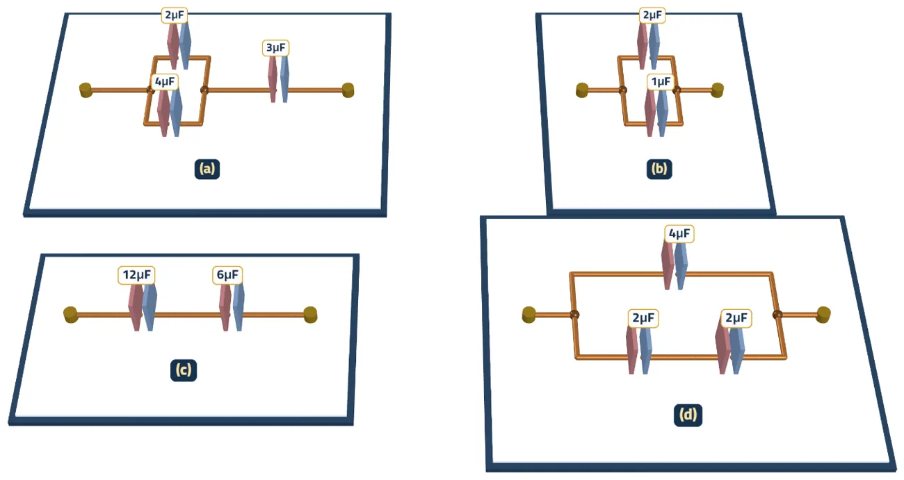
(a): (2+4) مع 3 توالي = 2μF ، (b): 2+1 = 3μF ، (c): 12 و 6 توالي = 4μF ، (d): 4 + (2 و 2 توالي = 1) = 5μF
(a) الشحنة تتضاعف لأن Q = CΔV و C ثابتة. (b) الطاقة تزداد أربع مرات لأن PE = ½C(ΔV)².
لأن صفيحتيها تبقيان مشحونتين مدة زمنية طويلة ما لم توصلا بموصل، وعند لمسهما باليد يصبح الجسم موصلاً بينهما فتفرغ المتسعة طاقتها الكبيرة خلاله بزمن قصير جداً فيتعرض الشخص لصدمة كهربائية خطرة.
(a) المساحة: تتناسب طردياً معها C = ε0A/d. (b) البعد: تتناسب عكسياً معه. (c) العازل: تزداد بإدخال عازل ثابت عزله k: Ck = kε0A/d.
الإثبات: PE = ½Ceq(ΔV)² و ΔV ثابت، فالطاقة تتناسب طردياً مع Ceq:
توازي: 3C ، توالي: C/3 ، (اثنتان توازي + واحدة توالي): 2C/3 ، (اثنتان توالي + واحدة توازي): 3C/2 ⟸ أكبرها 3C، فالتوازي يعطي أكبر طاقة PE = 3/2 C(ΔV)².
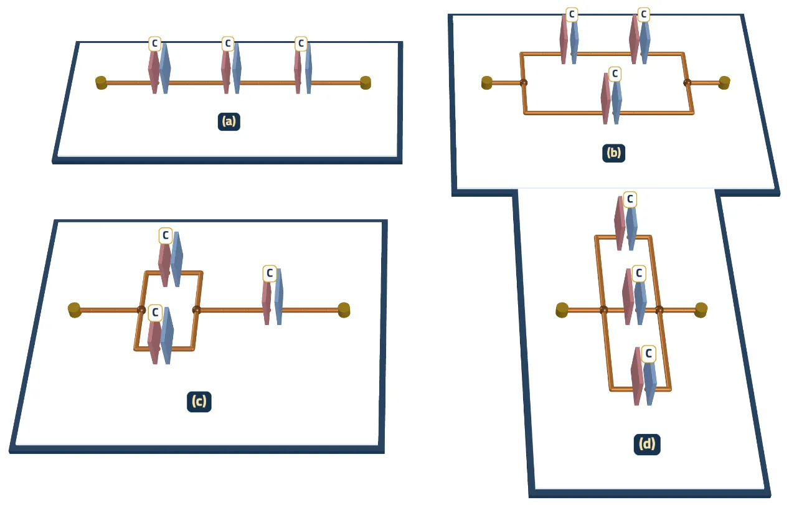
(d) = 3C (ثلاث توازي) ، (b) = C/2 + C = 3C/2 ، (c) = (2C × C)/(3C) = 2C/3 ، (a) = C/3 (ثلاث توالي)
الترتيب: d ثم b ثم c ثم a.
a- ثلاثة تطبيقات: المصباح الومضي (طاقة كبيرة تُفرغ فجأة لضوء ساطع)، اللاقطة الصوتية (تحويل الذبذبات الميكانيكية إلى كهربائية)، جهاز تنظيم ضربات القلب (نقل طاقة محددة للمريض بزمن قصير)، لوحة المفاتيح (تمييز المفتاح المضغوط بتغير السعة).
b- لأن الماء النقي عازل قطبي ثابت عزله (80)، يستقطب فيولد مجالاً معاكساً فيقل المجال المحصل، والشحنة ثابتة (مفصولة) فيقل ΔV ثمانين مرة ΔVk = ΔV/80. وزاري 2020 د1 تطبيقي
c- فائدتان للعازل: 1- زيادة سعة المتسعة (k مرة) فتختزن شحنة وطاقة أكبر. 2- زيادة أقصى فرق جهد تعمل عنده المتسعة لأن قوة عزل المادة أكبر من الهواء فلا يحصل الانهيار بسهولة. وزاري 2013 د1
d- العامل المتغير في متسعة لوحة المفاتيح: البعد بين الصفيحتين.
e- مصدر طاقة جهاز (The defibrillator): الطاقة المختزنة في المجال الكهربائي للمتسعة المشحونة في الجهاز.
f- 1- التوازي يزيد المساحة السطحية المتقابلة للمتسعة المكافئة فتزداد السعة. 2- التوالي يزيد البعد بين صفيحتي المتسعة المكافئة فتقل السعة.
a- لأن فرق جهد المتسعة بعد اكتمال شحنها يساوي فرق جهد البطارية، فلا يتوافر فرق جهد على المقاومة والتيار = صفر.
b- لأن العازل يستقطب فيولد مجالاً Ed معاكساً للمجال المؤثر فيقل المحصل Ek = E − Ed.
c- لتجنب الانهيار الكهربائي للعازل؛ فزيادة ΔV فوقه تزيد المجال حتى تعبر الشرارة وتتفرغ المتسعة وتتلف.
| الكمية | ماذا يحصل | السبب |
|---|---|---|
| a- الشحنة | تبقى ثابتة | المتسعة معزولة (مفصولة) |
| b- السعة | تتضاعف | Ck = kC = 2C |
| c- فرق الجهد | يقل إلى النصف | ΔVk = Q/Ck = ΔV/2 |
| d- المجال | يقل إلى النصف | Ek = ΔVk/d = E/2 |
| e- الطاقة | تقل إلى النصف | PE = ½Q²/Ck |
| الكمية | ماذا يحصل | السبب |
|---|---|---|
| a- فرق الجهد | يبقى ثابتاً | يساوي فرق جهد البطارية |
| b- السعة | تزداد 6 مرات | Ck = 6C |
| c- الشحنة | تزداد 6 مرات | Qk = CkΔV = 6Q |
| d- المجال | يبقى ثابتاً | E = ΔV/d و ΔV و d ثابتان |
| e- الطاقة | تزداد 6 مرات | PE = ½Ck(ΔV)² |
حلول مسائل الفصل الأول
(b) بعد اكتمال الشحن: ΔVC = ΔVbattery = 12 V
(c) Q = CΔV = 100 × 10−6 × 12 = 1200 μC = 1.2 × 10−3 C
(d) PE = ½ × 100 × 10−6 × (12)² = 7.2 × 10−3 J
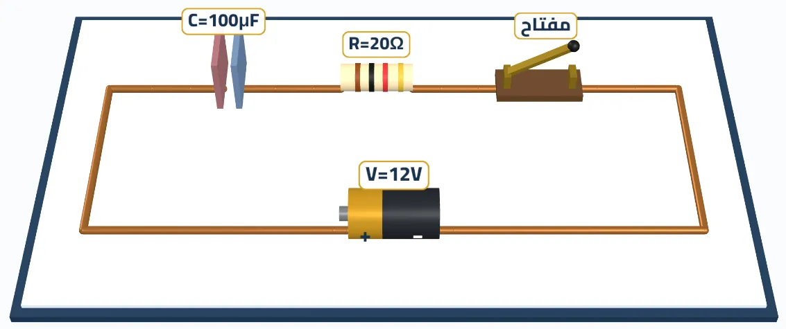
(a) Q = 4 × 20 = 80 μC
(b) مفصولة ⟸ Q ثابتة: k = ΔV/ΔVk = 20/10 = 2 ، Ck = kC = 8 μF (أو 80/10 = 8 μF)
(a) Ceq = (9×18)/(27) = 6 μF ، Q = 6 × 12 = 72 μC = Q1 = Q2
ΔV1 = 72/9 = 8 V ، ΔV2 = 72/18 = 4 V
PE1 = ½ × 9×10−6 × 64 = 288 × 10−6 J ، PE2 = ½ × 18×10−6 × 16 = 144 × 10−6 J
(b) عازل (k = 4) في C1 والبطارية متصلة: C1k = 36 μF ، Ceq = (36×18)/54 = 12 μF ، Q = 12 × 12 = 144 μC
ΔV1k = 144/36 = 4 V ، ΔV2 = 144/18 = 8 V
PE1k = ½ × 36×10−6 × 16 = 288 × 10−6 J ، PE2 = ½ × 18×10−6 × 64 = 576 × 10−6 J
قبل العازل: Q1 = 16 × 48 = 768 μC ، Q2 = 24 × 48 = 1152 μC
بعد العازل: ΔV ثابت فـ Q2 لا تتغير (1152 μC) ⟸ Q1k = 3456 − 1152 = 2304 μC
(a) C1k = 2304/48 = 48 μF ⟹ k = 48/16 = 3
(b) C1: قبل 768 μC وبعد 2304 μC ؛ C2: قبل وبعد 1152 μC.
(a) Ceq = 12 μF ⟹ ΔV = 600/12 = 50 V ، Q1 = 4×50 = 200 μC ، Q2 = 8×50 = 400 μC
PE1 = ½ × 4×10−6 × 2500 = 5 × 10−3 J ، PE2 = ½ × 8×10−6 × 2500 = 10 × 10−3 J
(b) عازل (k = 2) في C2 والمجموعة مفصولة ⟸ Qtotal ثابتة: C2k = 16 μF ، Ceq = 20 μF ، ΔV = 600/20 = 30 V
Q1 = 4×30 = 120 μC ، Q2k = 16×30 = 480 μC
PE1 = ½ × 4×10−6 × 900 = 1.8 × 10−3 J ، PE2k = ½ × 16×10−6 × 900 = 7.2 × 10−3 J
(a) أكبر سعة: الثلاث على التوازي Ceq = 33 μF ؛ Q1 = 36 μC , Q2 = 54 μC , Q3 = 108 μC ؛ Qtotal = 33 × 6 = 198 μC
(b) أصغر سعة: الثلاث على التوالي 1/Ceq = 1/6 + 1/9 + 1/18 = 1/3 ⟹ Ceq = 3 μF ؛ Q1 = Q2 = Q3 = Qtotal = 3 × 6 = 18 μC
(b) Qtotal = 2 × 40 = 80 μC = Q4 ؛ ΔV4 = 80/4 = 20 V ؛ فرق جهد مجموعة التوازي = 80/4 = 20 V
Q3 = 2 × 20 = 40 μC ؛ فرع التوالي Q1 = Q2 = 2 × 20 = 40 μC
(c) PE4 = ½ × 4×10−6 × (20)² = 8 × 10−4 J
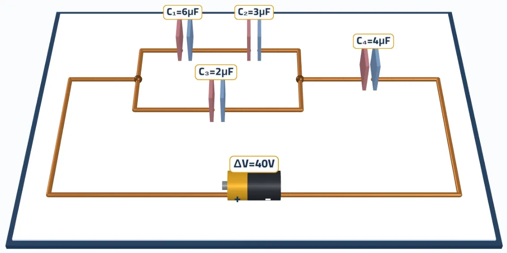
★ الأسئلة الوزارية للفصل الأول مع الحل
السنة والدور بجانب كل سؤال كما وردت في تجميعات الأسئلة الوزارية المنشورة للمدرسين (منتدى درر العراق، وملف حلول وزاريات المتسعات). الأرقام والحلول راجعناها وصحّحناها حسابياً.
أولاً: التعاليل
ج/ زيادة شحنته تزيد جهده والمجال حوله حتى يحصل تفريغ كهربائي خلال الهواء.
ج/ لأن الشحنتين متساويتان مقداراً ومختلفتان نوعاً.
ج/ لأن البعد بين الصفيحتين صغير جداً مقارنة بأبعادهما فيُهمل عدم انتظام الخطوط عند الحافات.
ج/ لأن العازل يستقطب ويولد مجالاً معاكساً Ed فيقل المحصل Ek = E − Ed.
ج/ لتجنب الانهيار الكهربائي للعازل وعبور الشرارة وتفرّغ المتسعة وتلفها.
ج/ لأن التوالي يزيد البعد بين صفيحتي المتسعة المكافئة والسعة تتناسب عكسياً مع البعد.
ج/ لأن التوازي يزيد المساحة المتقابلة للمتسعة المكافئة والسعة تتناسب طردياً معها.
ج/ لأن فرق جهدها بعد الشحن = فرق جهد البطارية فلا يتوافر فرق جهد على المقاومة ويصبح التيار صفراً.
ثانياً: التعاريف (ما المقصود)
ج/ مادة غير موصلة للكهربائية في الظروف الاعتيادية تعمل على تقليل المجال الكهربائي الموضوعة فيه.
ج/ أقصى مقدار لمجال كهربائي يمكن أن تتحمله المادة قبل حصول الانهيار الكهربائي لها (V/m).
ج/ النسبة بين سعة المتسعة بوجود العازل وسعتها بوجود الفراغ أو الهواء k = Ck/C.
ج/ دائرة تيار مستمر تحتوي متسعة فضلاً عن البطارية والمقاومة، تيارها متغير مع الزمن.
ثالثاً: ماذا يحدث / علام يعتمد / اذكر / ارسم
ج/ الشحنة تتضاعف (Q = CΔV)، والطاقة تزداد 4 مرات (PE = ½CΔV²).
ج/ المجال يقل (E = ΔV/d و ΔV ثابت)، والسعة تقل فالشحنة تقل (Q = CΔV).
ج/ المجال يقل k مرة (Ek = E/k)، والشحنة تبقى ثابتة لأن المتسعة معزولة.
ج/ الشحنة ثابتة، السعة تزداد 80 مرة، فرق الجهد يقل 80 مرة.
ج/ المساحة المتقابلة (طردياً)، البعد بين الصفيحتين (عكسياً)، نوع العازل: Ck = kε0A/d.
ج/ 1- زيادة السعة. 2- زيادة أقصى فرق جهد تتحمله المتسعة (قوة عزل أكبر من الهواء).
ج/ منحنٍ يبدأ بقيمة كبيرة (باتجاه معاكس لتيار الشحن) ويهبط بسرعة إلى الصفر — انظر مخطط تيار التفريغ في الموضوع 9-1.
ج/ الدائرة في جواب س5 من أسئلة الكتاب.
رابعاً: اختيار من متعدد
ج/ (c) Coulomb × V²
خامساً: المسائل
ج/ Q = 80 μC ، k = 20/10 = 2 ، Ck = 8 μF
ج/ 1- Q = 2×10−6 × 30 = 60 μC
2- E = ΔV/d = 30 / 1×10−4 = 3 × 105 V/m
3- Q ثابتة: PEk = Q²/2Ck ⟹ Ck = (60×10−6)² / (2 × 3×10−4) = 6 μF ⟹ k = 3
4- ΔVk = 60/6 = 10 V
ج/ Q = 80 μC ، Ck = 16 μF ، ΔVk = 80/16 = 5 V
ج/ Q = 6 × 30 = 180 μC ، Ck = 180/5 = 36 μF (k = 6)
ج/ Q = 200 μC ، Ck = 200/10 = 20 μF ، PEk = ½ × 200×10−6 × 10 = 1 × 10−3 J
ج/ C = 8.85×10−12 × 10−2 / 4×10−3 = 22.1 pF ، Q = 221 pC ، k = 10/5 = 2 ، Ck = 44.2 pF
ج/ Ceq = 18/9 = 2 μF ، Q = 12 μC ، ΔV1 = 12/6 = 2 V ، ΔV2 = 12/3 = 4 V (الأصغر سعة عليها الجهد الأكبر)
ج/ Imax = 20/25 = 0.8 A ، ΔVC = 20 V ، Q = 80×10−6 × 20 = 1600 μC ، PE = ½ × 80×10−6 × 400 = 1.6 × 10−2 J
ج/ المتسعة على التوالي ⟸ بعد الشحن I = 0 و ΔVC = 12 V ، C = 20/12 ≈ 1.67 μF ، PE = ½ × 20×10−6 × 12 = 1.2 × 10−4 J
★ بنك أسئلة إضافية (بنمط وزاري)
أجوبة بنك الأسئلة
2- لأن الإلكترونات تنتقل من الصفيحة المتصلة بالقطب الموجب وتتراكم على الأخرى، فتظهر على الصفيحتين شحنتان متساويتان مقداراً ومختلفتان نوعاً (بالحث)، وتتجاذبان على السطحين الداخليين.
3- الشحنة ثابتة (مفصولة)؛ السعة تقل (C ∝ 1/d)؛ فرق الجهد يزداد (ΔV = Q/C)؛ المجال يبقى ثابتاً لأن E = ΔV/d = Q/ε0A.
4- (c) 4 — 2C ÷ (C/2) = 4.
5- (a) مضاعفاً — PE ∝ (ΔV)².
6- 1/Ceq = 1/2 + 1/3 + 1/6 = 1 ⟹ Ceq = 1 μF ، Q = 12 μC لكل متسعة ، ΔV = 6 V , 4 V , 2 V.
7- Q = 24 , 36 , 72 μC ، Qtotal = 11 × 12 = 132 μC.
8- Q = 500 μC ، E = 100 / 2×10−3 = 5 × 104 V/m ، PE = ½ × 5×10−6 × 104 = 2.5 × 10−2 J.
9- Ceq = 48/16 = 3 μF ، Q = 72 μC ، ΔV1 = 18 V , ΔV2 = 6 V ، PE1 = 648 × 10−6 J , PE2 = 216 × 10−6 J.
10- Qtotal = 9 × 12 = 108 μC (ثابتة) ، C1k = 9 μF ، Ceq = 15 μF ، ΔV = 108/15 = 7.2 V ، Q1 = 64.8 μC , Q2 = 43.2 μC.
11- C = kε0A/d = 5 × 8.85×10−12 × 0.04 / 10−3 = 1.77 × 10−9 F = 1.77 nF.
12- Ceq = 600/50 = 12 μF ⟹ n = 12/2 = 6 متسعات.
13- Imax = 10/50 = 0.2 A ، Q = 200 μC ، PE = ½ × 20×10−6 × 100 = 1 × 10−3 J.
14- البطارية متصلة فـ ΔV ثابت؛ السعة تزداد 80 مرة فالشحنة تزداد 80 مرة والطاقة ½CΔV² تزداد 80 مرة.
15- كلاهما يبدأ بمقدار كبير ويهبط بسرعة إلى الصفر؛ اتجاه تيار التفريغ معاكس لتيار الشحن (الكلفانوميتر ينحرف للجهة الأخرى)؛ في الشحن يتوهج L1 وفي التفريغ يتوهج L2.